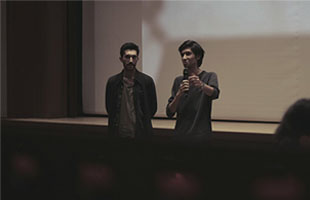

Yapım Tarihi - 2016
Süre - 00:05:35
Format - Kurmaca, Renkli, Türkçe
Yönetmen - Gökhan Kaya
Senaryo - Gökhan Kaya
Görüntü Yönetmeni - Oğuz Han Kaya
Işık - Oğuz Han Kaya
Oyuncular - Cemalettin Çekmece, Sencar
Sağdıç, Hilal Kaya, Özgür Turhan

17.Uluslararası İzmir Film Festivali, İzmir Sanat gösterimi